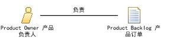

| 角色：Product Owner 产品负责人 |
 |
|
 |
||
| 其他执行 | ||
|---|---|---|
The Product Owner has the following responsibilities:
The product owner is responsible for the first of the three Scrum ceremonies : Sprint Planning The Scrum Team looks at the prioritized Product Backlog and slices off the top priority items and commits to completing them during a sprint. These items become the Sprint Backlog. In return for the Scrum team's commitment to completing the selected tasks, the Product Owner commits that he or she will not throw new requirements at the team during the sprint. Requirements are allowed to change but only outside the sprint. Once the team starts on a sprint it remains maniacally focused on the goal of that sprint. 产品负责人具有以下职责：
产品负责人负责三个Scrum仪式中的第一个：Sprint计划会议 Scrum团队查看经过排序的产品订单，获取其中具有最高优先级的一组订单项并承诺在一个冲刺（sprint）中完成。这组订单项称为冲刺（sprint）订单。 作为对Scrum团队承诺完成选定任务的回报，产品负责人承诺在一个Sprint周期内不再增加新的需求。不是不允许进行需求变更，而是需求变更只能在当前的Sprint之外进行。一旦开始一个Sprint，团队应该全神贯注的聚集在当前的Sprint目标上。 |
| 分配方法 |
|
|---|
This program and the accompanying materials are made available under the
Copyright © 1998--2008 Mountain Goat Software. All rights reserved. |